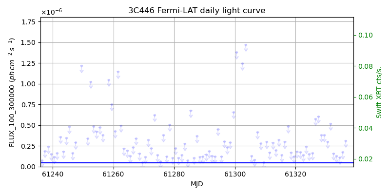
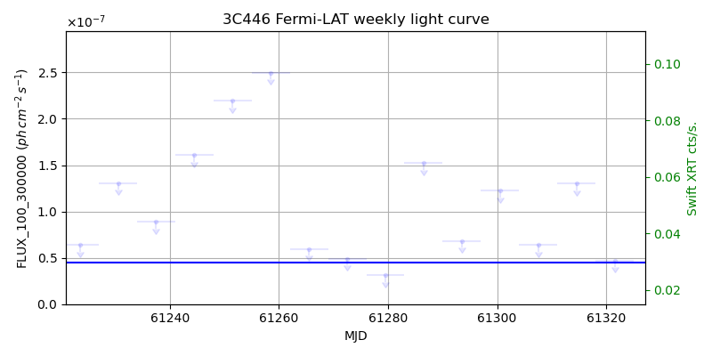
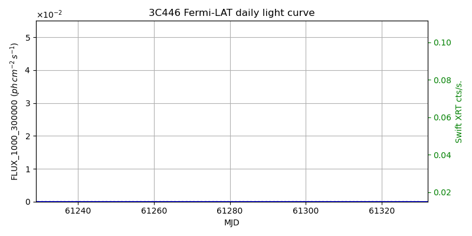
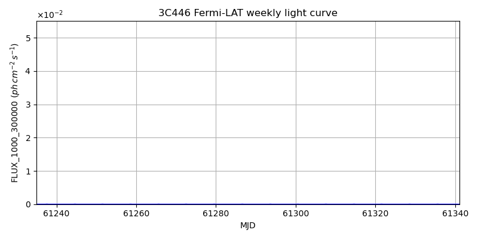

LAT Lightcurve site: https://fermi.gsfc.nasa.gov/ssc/data/access/lat/msl_lc/source/3C_446
Swift site: https://www.swift.psu.edu/monitoring/source.php?source=3C446
NED: Query
Time of last update of this page: UT: 2026-10-24 15:28 (MJD: 61337.645)
| Property | Value |
|---|---|
| R.A. | 22:25:47.28 |
| Dec. | -4:57:00.0 |
| z | 1.404 |
| 3FGL SpectrumType | PowerLaw |
| 3FGL PL Index | 2.36 |
| 3FGL Flux_100_300000 | 4.44e-08 1 / (s cm2) |
| 3FGL Flux_1000_300000 | 1.95e-09 1 / (s cm2) |
| 3FGL Flux >200 GeV | 1.45e-12 1 / (s cm2) |
| 3FGL Extrap. Crab >200 GeV | 0.01 |
| 3FGL Flux After EBL Absorption >200GeV | 3.92e-15 1 / (s cm2) |
| 3FGL EBL Crab Fraction >200GeV | 0.00 |

| MJD | dMJD | Flux | dFlux | Frac3FGL | FracCrab>200GeV | EBLFracCrab>200GeV |
|---|---|---|---|---|---|---|
| 61332.50 | 0.50 | 1.59e-07 | 0.00e+00 | 0.00 | 0.00 | 0.00 |
| 61333.50 | 0.50 | 1.29e-07 | 0.00e+00 | 0.00 | 0.00 | 0.00 |
| 61334.50 | 0.50 | 1.08e-07 | 0.00e+00 | 0.00 | 0.00 | 0.00 |
| 61335.50 | 0.50 | 1.73e-07 | 0.00e+00 | 0.00 | 0.00 | 0.00 |
| 61336.50 | 0.50 | 3.12e-07 | 0.00e+00 | 0.00 | 0.00 | 0.00 |

| MJD | dMJD | Flux | dFlux | Frac3FGL | FracCrab>200GeV | EBLFracCrab>200GeV |
|---|---|---|---|---|---|---|
| 61300.50 | 3.50 | 1.22e-07 | 0.00e+00 | 0.00 | 0.00 | 0.00 |
| 61307.50 | 3.50 | 6.42e-08 | 0.00e+00 | 0.00 | 0.00 | 0.00 |
| 61314.50 | 3.50 | 1.30e-07 | 0.00e+00 | 0.00 | 0.00 | 0.00 |
| 61321.50 | 3.50 | 4.73e-08 | 0.00e+00 | 0.00 | 0.00 | 0.00 |
| 61328.50 | 3.50 | 1.82e-07 | 0.00e+00 | 0.00 | 0.00 | 0.00 |

| MJD | dMJD | Flux | dFlux | Frac3FGL | FracCrab>200GeV | EBLFracCrab>200GeV |
|---|---|---|---|---|---|---|
| 61332.50 | 0.50 | 5.03e-08 | 0.00e+00 | 0.00 | 0.00 | 0.00 |
| 61333.50 | 0.50 | 5.72e-08 | 0.00e+00 | 0.00 | 0.00 | 0.00 |
| 61334.50 | 0.50 | 2.25e-08 | 0.00e+00 | 0.00 | 0.00 | 0.00 |
| 61335.50 | 0.50 | 2.24e-08 | 0.00e+00 | 0.00 | 0.00 | 0.00 |
| 61336.50 | 0.50 | 4.63e-08 | 0.00e+00 | 0.00 | 0.00 | 0.00 |

| MJD | dMJD | Flux | dFlux | Frac3FGL | FracCrab>200GeV | EBLFracCrab>200GeV |
|---|---|---|---|---|---|---|
| 61300.50 | 3.50 | 3.26e-08 | 0.00e+00 | 0.00 | 0.00 | 0.00 |
| 61307.50 | 3.50 | 6.67e-09 | 0.00e+00 | 0.00 | 0.00 | 0.00 |
| 61314.50 | 3.50 | 3.73e-09 | 0.00e+00 | 0.00 | 0.00 | 0.00 |
| 61321.50 | 3.50 | 9.86e-09 | 0.00e+00 | 0.00 | 0.00 | 0.00 |
| 61328.50 | 3.50 | 1.78e-08 | 0.00e+00 | 0.00 | 0.00 | 0.00 |
--------------------------------------------------------- Using user-supplied coords: 22:25:47.28 -4:57:00.0 2000 --------------------------------------------------------- FLWO UT night of: 2026-10-25 Local Sid. @ Midnight: 01:50 Sunset (-15.0) (local, UT): 18:49 01:49 Sunrise (-15.0) (local, UT): 05:27 12:27 Moonrise (local, UT): Moonset (local, UT): Moon phase: 0.99 --------------------------------------------------------- AzTime LSID UT Obj_el Obj_az Mn_el Mn_az Sep. --------------------------------------------------------- 18:49 20:39 01:49 45.4 140.0 26.2 94.5 40.9 19:19 21:09 02:19 49.1 149.6 32.4 98.6 41.1 19:49 21:39 02:49 51.8 160.5 38.6 103.2 41.3 20:19 22:09 03:19 53.3 172.6 44.7 108.4 41.6 20:49 22:39 03:49 53.4 185.2 50.6 114.6 41.8 21:19 23:09 04:19 52.1 197.4 56.2 122.3 42.0 21:49 23:39 04:49 49.6 208.6 61.2 132.2 42.2 22:19 00:09 05:19 46.1 218.5 65.5 145.3 42.4 22:49 00:39 05:49 41.7 227.0 68.4 162.2 42.6 23:19 01:10 06:19 36.8 234.2 69.4 182.2 42.8 23:49 01:40 06:49 31.4 240.5 68.2 202.0 43.0 00:19 02:10 07:19 25.7 246.1 65.1 218.6 43.2 00:49 02:40 07:49 19.8 251.0 60.8 231.3 43.4 01:19 03:10 08:19 13.7 255.5 55.7 240.9 43.6 01:49 03:40 08:49 7.5 259.7 50.1 248.5 43.8 02:19 04:10 09:19 1.4 263.7 44.3 254.6 44.0 02:49 04:40 09:49 -5.0 267.7 38.2 259.8 44.2 03:19 05:10 10:19 -11.8 271.6 32.1 264.4 44.4 03:49 05:40 10:49 -18.2 275.7 26.0 268.5 44.7 04:19 06:10 11:19 -24.5 280.0 19.9 272.4 44.9 04:49 06:40 11:49 -30.8 284.6 13.8 276.2 45.2 05:19 07:11 12:19 -36.9 289.8 7.8 279.9 45.5 05:27 07:18 12:27 -38.4 291.3 6.2 280.9 45.5 --------------------------------------------------------- Source never above horizon of 55.0 deg. Dark hours >55 deg.: 0.00